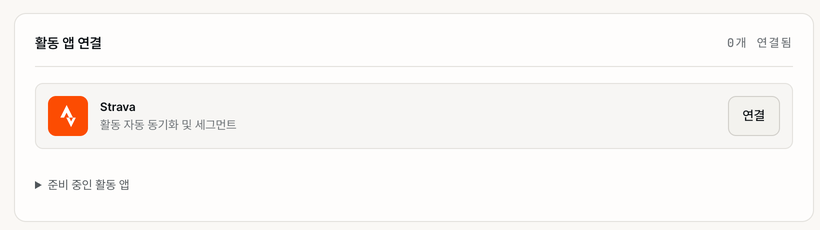

9. Strava·연결 앱
이 장에서 할 수 있는 것
- Strava를 연결해 새 활동을 자동으로 받고, 과거 활동을 한 번에 가져옵니다.
- Apple Health · Health Connect 같은 헬스 데이터 소스의 상태를 확인합니다.
- 연결을 끊거나, 가져온 기록이 제대로 들어왔는지 점검합니다.
9.1 Strava 연결하기

따라 하기
- 오른쪽 위 톱니바퀴 > 왼쪽 연결 앱을 엽니다.
- 활동 앱 연결 카드의 Strava 줄에서 연결을 누릅니다.
- Strava 화면에서 오라이더의 접근을 승인합니다.
- 오라이더로 돌아오면 Strava 줄에 연결 해제 버튼이 보이고, 카드 오른쪽 위 숫자가 "1개 연결됨"으로 바뀝니다.
Garmin · Wahoo 같은 다른 활동 앱은 준비 중인 활동 앱을 펼치면 보이며, 아직 연결할 수 없습니다. 앱과 웹의 Strava 연결 상태는 서로 맞춰집니다.
9.2 과거 활동 가져오기
- Strava를 연결하면 연결 앱 화면에 Strava 동기화 옵션 카드가 나타납니다.
- 과거 활동 가져오기 줄의 가져오기를 누릅니다. (설정 > 내 데이터의 과거 활동 가져오기 카드에서도 시작할 수 있습니다.)
- 진행 화면에서 가져온 활동 수와 진행 상황을 봅니다.
- 한 번 끝나면 같은 버튼이 리포트 보기로 바뀌어 결과를 다시 볼 수 있습니다.
과거 활동이 많으면 시간이 걸립니다. 가져온 활동은 분석·체력 계산이 끝난 뒤 차례로 채워집니다. 처음에 "가져온 기록을 분석하고 있어요"가 보여도 정상입니다.
9.3 자동 업로드
Strava 동기화 옵션 카드의 자동 업로드를 켜면 활동이 끝날 때 Strava에 자동으로 올라갑니다. 저장 · 동기화 · 업로드는 서로 다른 단계이므로, 결과는 앱과 Strava에서 직접 확인하세요.
9.4 연결 해제
- 설정 > 연결 앱 > Strava 줄의 연결 해제를 누르고 확인합니다.
- 이미 가져온 활동은 그대로 남습니다. 이후 새 Strava 활동은 들어오지 않습니다.
Strava에서 가져온 활동까지 지우려면 설정 > 내 데이터의 Strava 활동과 상세 기록 삭제를 씁니다. 되돌릴 수 없습니다(10.7). Strava 쪽에 이미 올라간 데이터는 Strava에서 따로 지워야 합니다.
9.5 헬스 데이터 소스
연결 앱 화면 아래 헬스 데이터 소스에서는 워치·앱의 운동 · 수면 · HRV 데이터 연결 상태를 봅니다. 소스가 많을수록 회복·추세 분석이 정확해집니다.
| 소스 | 연결 방법 | 상태 표시 |
|---|---|---|
| Strava | 위 활동 앱 연결에서 관리 | 활성 · 허용된 스코프 |
| Apple Health | iPhone 앱에서 권한을 줍니다. | 활성 · 마지막 동기화 시각 |
| Health Connect | 화면에 항목은 있지만, 지금 출시된 Android 앱에서는 아직 연결할 수 없습니다. | 미연결 |
맨 아래 종목별 주 소스에서는 같은 운동이 두 소스에 있을 때 피드에 보여 줄 기본 소스를 종목마다 고릅니다. "자동"은 가장 먼저 연결된 소스를 씁니다.
9.6 가져온 러닝 기록 점검하기
- 가져오기 리포트에서 완료 · 건너뜀 · 오류 수를 확인합니다.
- 홈에서 러닝 칩과 본인을 골라 활동을 찾습니다.
- 상세에서 종목 · 거리 · 시간 · 페이스를 보고, 랩 정보가 있으면 구간 탭의 랩 분석을 봅니다.
원본에 심박·케이던스·자세한 경로가 없으면 연결 뒤에도 생기지 않습니다. 같은 운동이 앱 · Strava · 파일로 각각 들어왔다면 출처를 확인하고 같은 파일을 또 올리지 마세요.
9.7 자주 막히는 점
| 이럴 때 | 확인할 것 |
|---|---|
| 연결했는데 "0개 연결됨"으로 보여요 | 화면을 새로 고친 뒤 다시 확인하세요. 계속 그렇게 보이면 게시판 문의/신고로 알려 주세요(11.5). |
| 새 Strava 활동이 안 들어와요 | Strava 쪽 승인을 취소하지 않았는지, 활동이 Strava에 올라갔는지 |
| 같은 운동이 두 번 보여요 | 종목별 주 소스를 정하세요. 훈련 부하는 같은 운동을 한 번만 셉니다. |